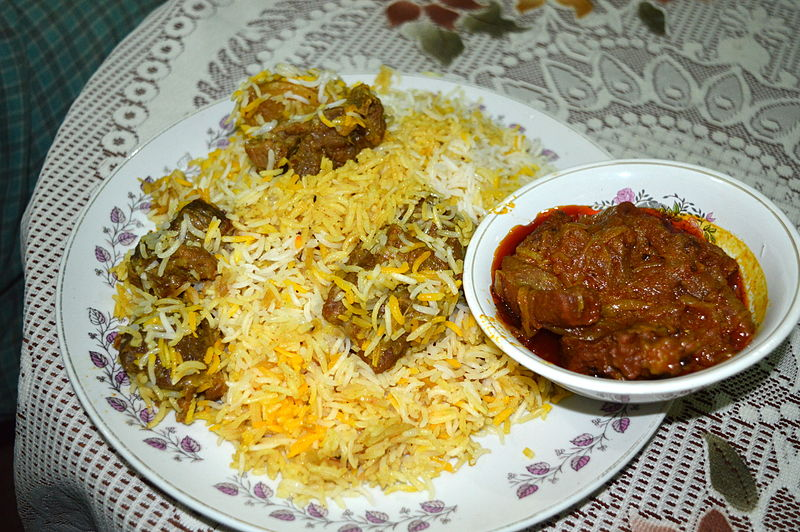

Biriyani

Biryani is a fragrant and flavorful mixed rice dish originating in West Asia. It's considered a cornerstone of Mughlai cuisine, a fusion of Indian and Central Asian culinary
styles developed during the Mughal Empire (15th-19th centuries).
Traditionally, biryani involves layering marinated meat (chicken, lamb, beef, etc.) or vegetables with basmati rice and aromatic spices like cloves, cardamom, cinnamon,
and saffron. It's often cooked using the "dum" method, where the pot is sealed and cooked over low heat, allowing the flavors to meld beautifully.
Biryani is not just a dish; it's a celebration of culinary traditions. It holds a special place in South Asian cuisine, enjoyed during festivals, special occasions, and
everyday meals. Different regions boast their unique biryani variations, each with distinct ingredients and cooking techniques.
For the marinade:
- 1 kg (2 lbs) beef (chuck steak or braising steak), cut into bite-sized pieces
- 1 cup yogurt
- 1 tablespoon ginger-garlic paste
- 1 tablespoon lemon juice
- 1 teaspoon red chili powder
- 1 teaspoon coriander powder
- 1/2 teaspoon turmeric powder
- 1/2 teaspoon garam masala
- Salt to taste
For the rice:
- 1.5 cups basmati rice, rinsed and soaked for 30 minutes
- 3 cups water or beef broth
- 1 teaspoon salt
- 1 bay leaf
- 2 cloves
- 2 green cardamoms
- 1 cinnamon stick
For the layering:
- 1/4 cup ghee or vegetable oil
- 2 large onions, thinly sliced
- 1/2 cup chopped coriander leaves
- 1/4 cup chopped mint leaves
- Fried onions (optional)
- Saffron strands (optional, soaked in warm milk/water)
Instructions
- **Marinate the beef:** In a large bowl, combine yogurt, ginger-garlic paste, lemon juice, red chili powder, coriander powder, turmeric powder, garam masala, and salt. Add the beef pieces and toss well to coat them evenly. Cover and marinate for at least 30 minutes, or preferably overnight for deeper flavor.
- **Cook the rice:** In a separate pot, bring water or broth to a boil. Add rinsed and soaked rice, salt, bay leaf, cloves, cardamoms, and cinnamon stick. Reduce heat, cover the pot, and simmer for 10-12 minutes, or until the rice is partially cooked but still has a slight bite. Drain the rice and set it aside.
- **Prepare the layering:** Heat ghee or oil in a large pot or Dutch oven over medium heat. Add the sliced onions and fry until golden brown. Remove the fried onions with a slotted spoon and set them aside.
- **Cook the marinated beef:** Add the marinated beef to the pot with the remaining oil. Increase heat slightly and cook, stirring occasionally, until the beef is browned on all sides.
- **Assemble the biryani:** In a large pot or oven-safe dish, spread a layer of half-cooked rice. Top it with half of the browned beef, half of the fried onions, and half of the chopped coriander and mint leaves. Repeat the layering with the remaining rice, beef, fried onions and herbs
- **(Optional) Add saffron:** Sprinkle the soaked saffron strands (with the soaking liquid) over the top layer.
- **Seal and cook:** Cover the pot or dish tightly with foil or a lid. You can either cook the biryani on the stovetop or in the oven.
- **Stovetop method:** Reduce heat to low and simmer for 20-25 minutes, or until the rice is cooked through and the flavors are well combined.
- **Oven method:** Preheat the oven to 180°C (350°F). Bake the covered biryani for 20-25 minutes, or until the rice is cooked through.
- **Rest and serve:** Once cooked, turn off the heat and let the biryani rest for 10 minutes before serving. Fluff the rice gently with a fork and serve hot with raita (yogurt-based condiment) and a side salad.
Tips
- You can adjust the spice level according to your preference.
- For a richer flavor, use bone-in beef pieces.
- You can add other vegetables like carrots, peas, or potatoes to the biryani.
- Instead of yogurt, you can marinate the beef in buttermilk for a tangier flavor.
Enjoy your delicious homemade beef biryani!